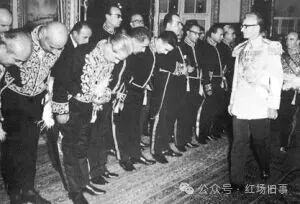
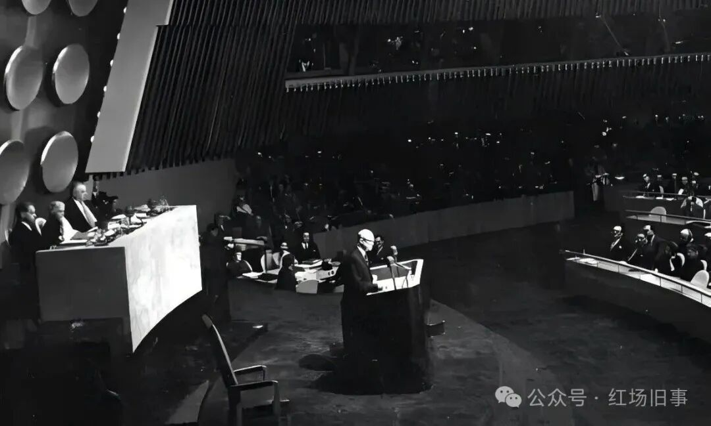
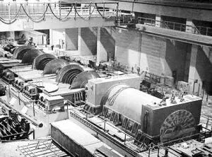
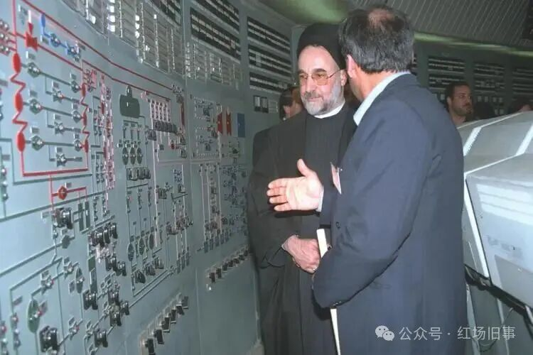
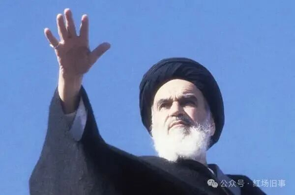

1977年4月，德黑兰的一间密室里，两个人握住了手。一个是伊朗国王巴列维，一个是来访的以色列国防部长佩雷斯。他们签署的协议代号“鲜花工程”，一个价值数十亿美元的秘密计划：以色列向伊朗出售最先进的弹道导弹技术，伊朗为以色列提供石油和资金。

十年后，这些导弹将成为以色列的“杰里科-2”；三十年后，这些技术将出现在让整个中东夜不能寐的“伊朗核威胁”中。而这一切的种子，早在二十年前就已埋下。播种的人，是美国。
一、美国埋下的“核种子”
1957年，国际原子能机构刚挂牌营业，美国总统艾森豪威尔就推出了“和平利用原子能”计划。这个计划的核心逻辑很简单：与其让各国偷偷摸摸搞核武器，不如由美国主动提供民用核技术，换取他们放弃核武梦想。伊朗成为这个计划的受益者之一。

1957年，美伊签署民用核能合作协议。1967年，美国向德黑兰大学交付了一座5兆瓦的研究用反应堆，并提供武器级高浓缩铀作为燃料。这座反应堆至今仍在德黑兰运行，是伊朗核研究的核心设施。
20世纪70年代，随着石油收入激增，巴列维国王野心勃勃地规划了超过20座核反应堆。数十名伊朗学生被送往麻省理工等美国顶尖学府深造。伊朗原子能机构向麻省理工支付了1000万美元，为伊朗核工程师提供研究生课程培训。美国如此慷慨，不只是为了“和平”。1953年，中情局策划“阿贾克斯行动”，推翻了民选首相摩萨台，将巴列维重新扶上孔雀宝座。从此，伊朗成为美国遏制苏联的“波斯湾宪兵”。核技术援助，不过是这盘大棋中的一枚棋子。
二、伊以联手：“鲜花工程”的秘密
如果说美国是播种者，那以色列就是浇灌者。1977年4月，佩雷斯秘密访问德黑兰，与巴列维签署了六项石油换武器协议，“鲜花工程”是其中最机密的一项。目标是联合研发一种可携带750公斤弹头、射程约480公里的地对地导弹。以色列专家回忆，当时以方可谓倾囊相授。伊朗工程师被分批送往以色列，假扮成游客经欧洲转机，抵达后护照被换，蒙上眼睛由摩萨德特工送往沙漠腹地的迪莫纳核设施，以色列的秘密核武器研究中心。

“我们连呼吸的空气也被过滤了。”一名伊朗工程师后来回忆。为防止泄密，所有人不许携带宗教物品，不许用波斯语对话，许多人被强制剃掉大胡子，头发染成金黄色。作为回报，巴列维向以色列提供价值2.8亿美元的石油和5000万美元现金。这笔钱为以色列的导弹研发注入了关键资金。最敏感的问题是：核弹头。根据解密文件，在会谈中，以色列外长达扬明确告诉伊朗将军图凡尼安：“这种导弹可以视为携带核弹头的导弹，因为750公斤的有效载荷，可以用于双重用途。”双方心知肚明：这个项目，从一开始就为核武器预留了可能性。
三、美苏的角色：默许与算计
美国知道吗？根据CIA解密的《纽约时报》报道，美国情报部门对伊以军事合作有所察觉，但并不知道“鲜花工程”的具体细节。时任中情局局长赫尔姆斯后来表示，对这些文件的曝光“并不惊讶”。为何不阻止？答案很简单：伊以合作符合美国利益。两国都是美国的战略资产，他们的紧密联盟，可以有效遏制苏联支持的激进阿拉伯势力。至于核技术，美国乐观地认为，只要在掌控之中，就不会出问题。

苏联呢？斯大林晚年对以色列的“变节”深感失望，那个他曾亲手在联合国扶植起来的犹太国家，竟在朝鲜战争中倒向美国。莫斯科转而支持埃及、叙利亚等激进阿拉伯国家。对于伊以联盟，苏联选择了容忍。只要这两个亲美国家不直接威胁苏联利益，就不值得为此大动干戈。况且，苏联自己也在中东寻找突破口——与伊拉克结盟、支持巴解组织、拉拢叙利亚。默许伊以合作，某种程度上也是让美以陷入“自缚手脚”的算计。两个超级大国的默契，成就了这段隐秘的婚姻。美国提供核技术，以色列提供导弹技术，伊朗出钱出地，一场三方合谋的核游戏，在冷战的阴影下悄然进行。
四、1979：一夜凋谢的“鲜花”
1978年，德黑兰的街头开始出现抗议的人群。霍梅尼流亡巴黎，通过录音带向国内传递信息：美国和以色列是“大小撒旦”，必须打倒。

嗅觉灵敏的以色列总理贝京意识到问题严重。摩萨德局长霍菲少将紧急制订撤离计划。伊朗秘密警察负责人法杜斯特将军——那个与摩萨德长期合作的“老朋友”——设法将以色列专家隔离保护，分批撤离。撤离时，仅从克尔曼省的锡尔延导弹基地，以色列专家就带走了装满两个集装箱的“居鲁士大帝”导弹设计图纸。1979年1月16日，巴列维仓皇出逃。2月1日，霍梅尼返回德黑兰。4月1日，伊朗伊斯兰共和国成立。霍菲坐镇美国驻德黑兰大使馆，直到确认没有一名犹太人被落下，才登上最后一班法航飞机离开，“鲜花工程”自此彻底凋谢。
五、历史的讽刺：谁种下了今天的“核威胁”？
1980年，两伊战争爆发。伊拉克萨达姆在美国支持下，开始轰炸伊朗核设施。布什尔的核电站被炸毁，伊朗核计划陷入瘫痪。但战争的残酷让伊朗领导层意识到：单纯依赖常规武器，难以抵御外部威胁。1983年，伊朗秘密重启核计划。1988年，伊以共同开发的“居鲁士大帝”导弹在以色列试验成功——这就是今天以色列“杰里科-2”弹道导弹的前身。它随时可以用来打击伊朗核目标。2002年，伊朗纳坦兹和阿拉克两处秘密核设施被曝光。这些设施，正是当年“鲜花工程”留下的技术种子，在二十年后生根发芽。半个世纪前，美国亲手向伊朗输送核技术；以色列倾囊相授导弹研发。今天，美以联手空袭伊朗核设施，而伊朗的核能力，恰恰来自他们当年的“慷慨”。这或许是中东最黑色幽默的结局：你亲手种下的种子，终将长成刺向你的利剑。
六、下期预告
1979年，霍梅尼的追随者冲进美国大使馆，扣押52名外交官长达444天。那场“人质危机”，让美伊从盟友彻底沦为死敌。但鲜为人知的是，就在那场危机中，有一批神秘的文件被伊朗学生发现——那是以色列外交官撤离时来不及销毁的秘密档案。其中详细记录了“鲜花工程”的全貌，包括伊以导弹合作、核技术交流，以及双方对美国的“隐瞒策略”。当这些文件被公之于众，华盛顿一片哗然。美国中情局这才意识到，自己的两个盟友，竟然联手瞒着自己，在中东玩了一场危险的核游戏。下一集《中东风云：1979——德黑兰的“背叛之夜”》，我们揭开人质危机背后的惊天秘闻。打不起 怂不住：坐拥世界级资源的伊朗，为何活成了“中东穷人”？中东风云｜第一集 波斯帝国的“犹太人救赎”——2500年前的伏笔
文字与图片版权归各自权利人所有；排版根据抓取内容整理。